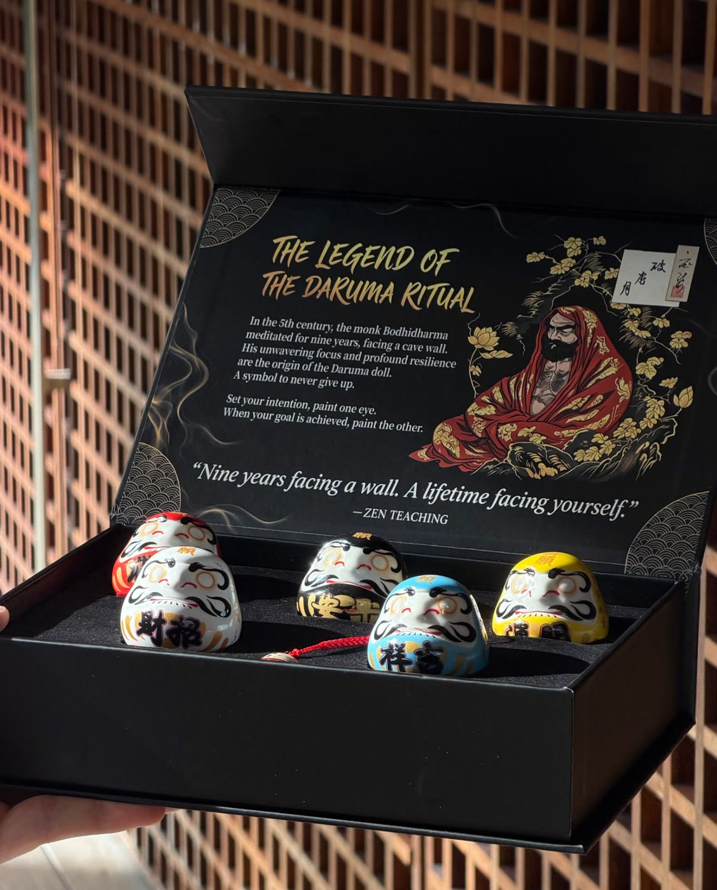
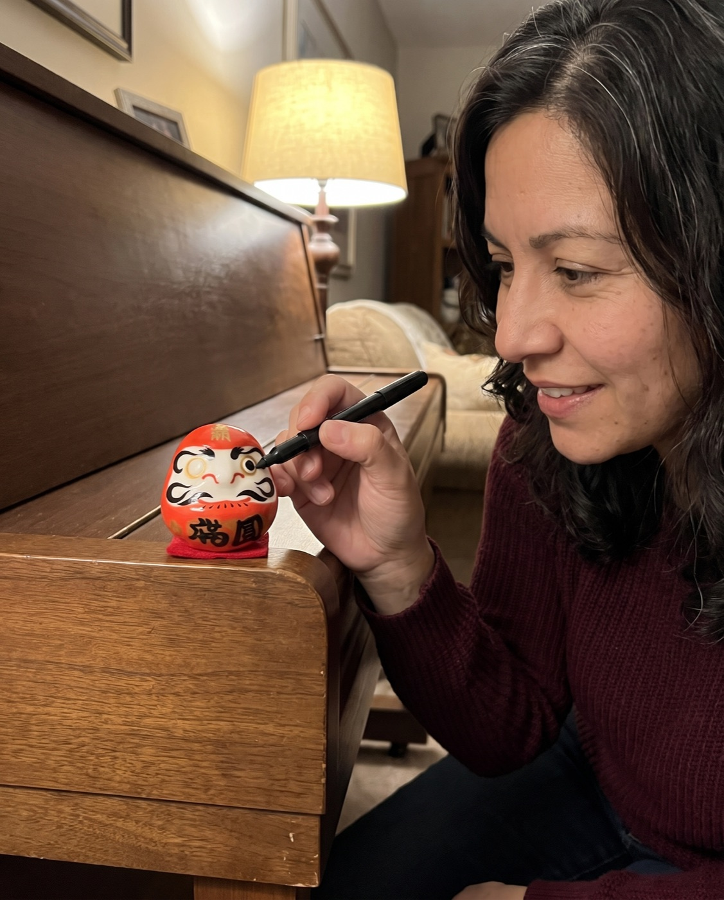
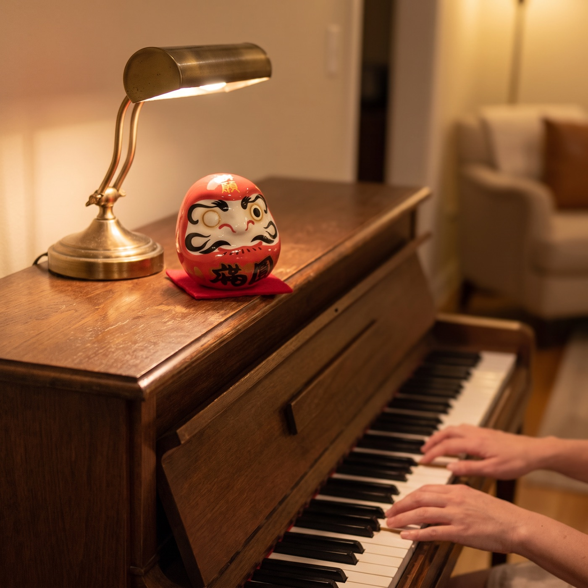
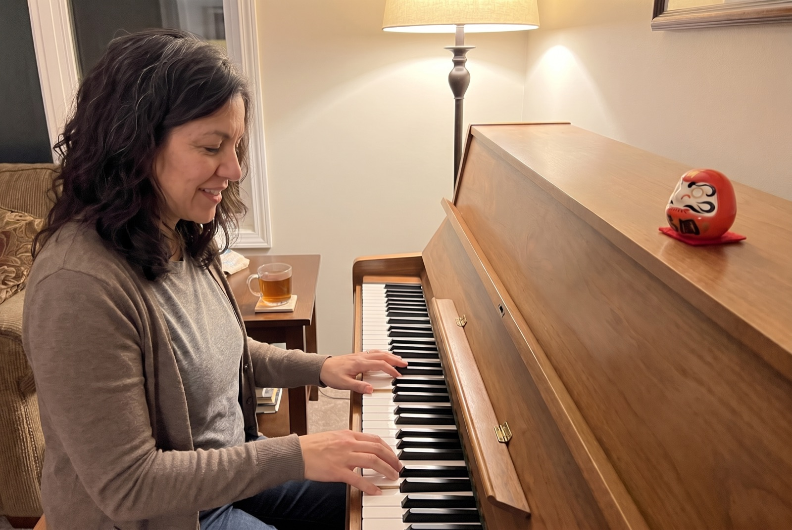
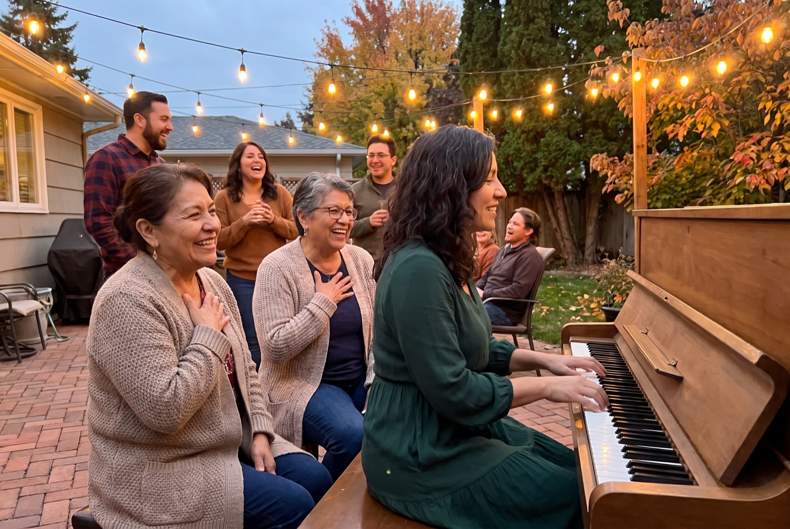
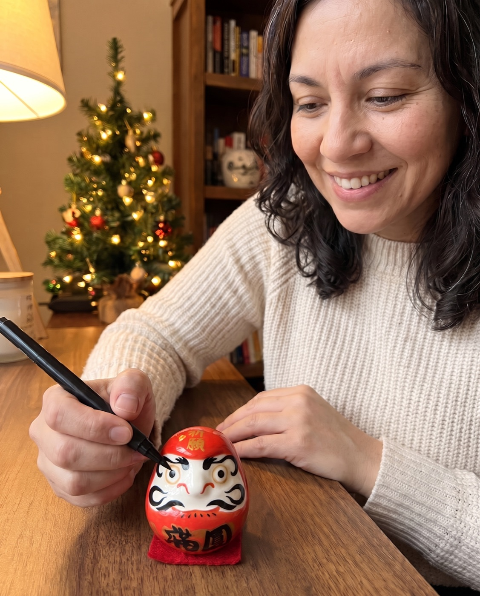

First person
“Every January I Say This Is My Year. By February I've Forgotten.” Then a Friend Gave Me a Doll With No Eyes
A school librarian in Tucson on the 12 months between painting one eye and painting the other.
A story written by Daruma Ritual to show how the ritual is used. The customer messages quoted on this page are real.
I have a notebook that is mostly first pages.
Every year it goes the same way. On January 1st I write "This is my year" at the top of a clean page, and under it, the same thing: learn to play the piano properly. Not just the three songs I half-remember from childhood. Properly.
By the second week of February, the notebook is in a drawer and the piano is a shelf for mail.
I'm 41. I'm a school librarian in Tucson. I'm not a quitter at anything else in my life. I've just never been able to make a promise to myself that lasted longer than a promise to anyone else.
Chapter 1: The gift I almost didn't open
Last New Year's Day, my friend Joanne came over with a black box under her arm. "You're going to roll your eyes," she said. "Open it anyway."
Inside, in a velvet tray, were five small round ceramic dolls in red, white, black, yellow and blue. Stern little faces. Gold writing on their foreheads. And not one of them had eyes.

On the inside of the lid was the story. A monk who sat facing a wall for nine years. A tradition from Japan, 400 years old, where you choose one goal, paint one eye, and keep the doll where you'll see it until the goal is done.
"One goal," Joanne said. "Not eight. One."
Chapter 2: Painting the first eye
That night I took the red one, red is for fortune and luck, and I sat at the piano for the first time in a year. I put the doll on top of the closed lid, where I couldn't avoid it.
The card said to paint the doll's own left eye first, which is the one on your right as it faces you. I used a black marker from the kitchen drawer. My hand was shaking a little, which made me laugh at myself.

I wrote the goal on a slip of paper and tucked it under the cushion: Play "Clair de Lune", all of it, for Mom's 70th birthday in October.
Official Daruma Ritual store · Free tracked shipping worldwide · 30-day returns
Chapter 3: February, the month I always quit
This is where every other year ended. February is report-card month at school. I'm tired, I eat dinner standing up, and the piano goes back to being furniture.
It happened again. Two weeks without playing. But this time there was a red face on top of the piano with one eye open, and every time I walked past it to put the mail down, it was there.
It didn't make me feel guilty. It made me feel like I'd said something out loud that I still meant. So one Sunday I moved the mail, set a timer for 15 minutes, and played the first page badly.

Chapter 4: What actually changed
I want to be honest here, because I hate articles that pretend a product did someone's work for them. The doll didn't teach me the piano. I did, 15 minutes at a time, with a lot of wrong notes.
What changed was smaller than that. The goal stopped living in a notebook in a drawer and started living in the room with me. I couldn't forget it, because it was looking at me.
- A notebook page I never turned back to
- A reminder on my phone I swiped away
- Telling friends at a party, then never mentioning it again
- One goal, written on a slip of paper
- A small face on the piano I saw every single day
- A finish line: the day I'd paint the second eye

Chapter 5: The other four dolls
There were four more Daruma in the box, so I gave them away. White to my sister, who was going back to college at 38. Blue to a colleague who wanted a calmer year. Black and yellow to my nephews, who painted their first eyes at the kitchen table and argued about who did it better.
It became a small thing between us. "How's your eye?" my sister would text me. Nobody else would understand the question.
“Finally I was able to perform our first ritual with my daughter and her husband. I will be purchasing more sets to give to my other children. … this was a good way to have them set goals to focus on all of the good things in their lives.”
Chapter 6: October
My mother turned 70 on a warm evening in October. My brother rolled the piano out onto the patio, which is a story for another day.
I played "Clair de Lune". All of it. I missed two notes in the middle and nobody cared. My mother cried, and then she laughed at herself for crying.

Chapter 7: The second eye
I waited until December to paint the second eye. I'm not sure why. I think I wanted to sit with it.
The doll is still on my desk, both eyes open now. It's the only New Year's resolution I've ever been able to point at.

It's the only resolution I've ever been able to point at.
If you're the same as me
If you have a notebook full of first pages too, here's what I'd tell you. Pick one thing. Paint one eye. Put it somewhere you can't avoid.
The set Joanne gave me is the Daruma Ritual Premium Set: five ceramic Daruma in a matte-black magnetic box, with the legend and the ritual written inside and a little chiming Daruma keychain. Five dolls means you can keep one and give four away, which turned out to be the best part.
- Day 1Choose one goal. Write it down and paint the first eye: the doll's own left, which is the one on your right as it faces you. Any black marker works (one isn't in the box).
- Every day afterThe Daruma sits where you'll see it: a desk, a shelf, a nightstand. One eye open, waiting.
- Week 4Look at it and ask yourself one honest question: what did I do this week toward the goal?
- The day it's donePaint the second eye. Keep it as a record, or start again with a new goal.
 1 Premium Set
1 Premium Set5 Daruma + 1 chiming keychain
2 Premium Sets10 Daruma + 2 keychains + $20 gift card free
3 Premium Sets15 Daruma + 3 keychains + $20 gift card free
Each set: 5 ceramic Daruma, matte-black magnetic box, legend & ritual cards. Free tracked shipping.
Official Daruma Ritual store · Free tracked shipping worldwide · 30-day returns
“I received my Daruma a few weeks ago and it has become a daily source of motivation for me. It reminds me to stay focused on my goals and to keep showing up. … Thank you for creating something so meaningful!”
Is this for you?
This is for you if…
- You've written the same New Year's goal more than once
- You want something to share with family or friends on January 1st
- You'd like a gift that matters after Christmas is over
Skip it if…
- You're looking for a shortcut that does the work for you
- You'd rather keep every goal in an app
Questions I had before I started
What exactly is in a set?
Five ceramic Daruma in red, white, black, yellow and blue, a matte-black magnetic gift box with a velvet tray, the legend & ritual cards, and a chiming Daruma keychain.
Is a pen or marker included?
No. Any black marker or brush pen works for the eyes.
Do I need to know anything about Japanese culture?
No. The ritual card in the box explains the steps in a minute.
How does shipping work?
Shipping is free and tracked to every country. The delivery estimate is shown at checkout; international post is slower in December, so order early for Christmas.
What if it's not right?
You have 30 days after it arrives to request a return.
Official Daruma Ritual store · Free tracked shipping worldwide · 30-day returns